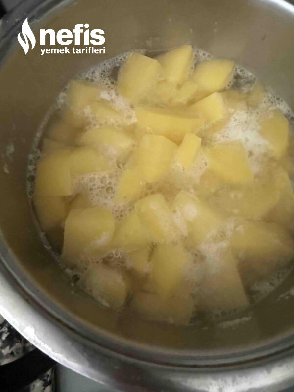

🍽️ 6-8 kişilik⏱️ Hazırlık: 15 dk🔥 Pişirme: 30 dk🏷️ Hamur İşi Tarifleri🏷️ Börek Tarifleri
Malzemeler
- 5 orta boy patates
- 2 su bardağı rendelenmiş kaşar ( 200-250 gr)
- 1 adet yumurta
- Yarım demet maydanoz
- 2,5 su bardağı un (300 gr)
- 1 tatlı kaşığı tuz
- 1,5 çay kaşığı kabartma tozu
- 1 çay kaşığı karabiber
- 1 çay kaşığı pulbiber ( isteğe bağlı)
- Tereyağ
Hazırlanışı
- Önce patatesleri haşlayıp eziyoruz.
- Rendelenmiş kaşar, doğranmış maydanoz un,tuz kabartma tozu ve baharatları karıştırıp hamuru hazırlıyoruz.
- İstediğimiz büyüklükte bezelere ayırıyoruz.
- Unlayarak tabak büyüklüğünde açıyoruz.
- Isıtılmış tavada önlü arkalı pişiriyoruz. Pişenleri bol tereyağı ile yağlıyoruz afiyet olsun🙂.